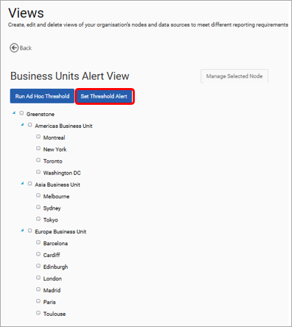
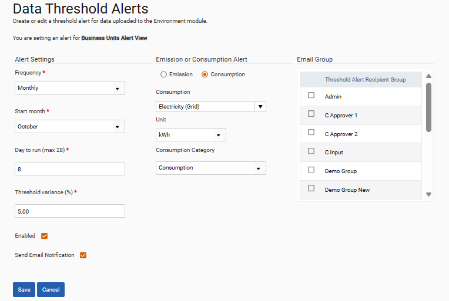
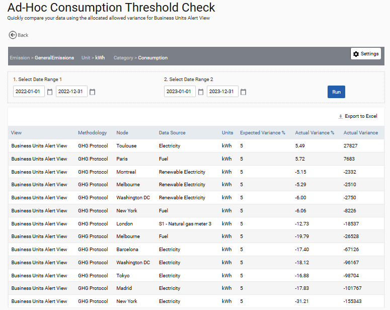
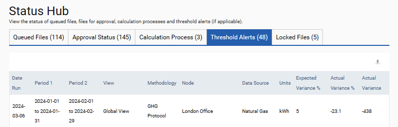

The calculation of threshold variances is available for both emissions and consumption. Threshold alerts trigger notifications when data exceeds a variance threshold. These are set up in the ‘Alerts Views’ tab of Admin Settings > Organisation > Views.
Create the view in the same way a regular view would be created. Set Threshold Alert.

Complete the fields to specify how often variance checks are conducted and the type of data to be included. Check the enabled box to activate the threshold checks and the Send Email Notification box to notify the user group(s) specified on the right of the screen. The threshold variances are calculated night of the day of the month specified in the Day to run field. If email notifications are enabled, they are sent out at the same time.

The threshold variances calculation can also be run manually at any time for a particular alert view. This is done by selecting the required ‘Alert’ view and then ‘Run Threshold’. Select the data source and if for consumption the units, set the date ranges and select ‘Run’. The resulting table can be exported to Excel for easy checking of the data.

Finally, threshold alerts are visible on the status hub on the home page. They are also triggered when input forms exceed the expected variance value.
